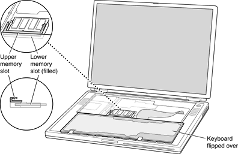

| PATH |

The computer has two RAM expansion slots that accommodate standard SO (small outline) DIMMs using SDRAM devices. One of the slots is normally occupied by a factory-installed SO-DIMM. The other slot is available for a user-installed SO-DIMM.
| Note: Some configurations come with factory-installed SO-DIMMs in both slots. |
RAM expansion SO-DIMMs for both models must be PC133 compliant. PC133 SO-DIMMs in the 550-MHz model operate at the speed of PC100 modules.
The SO-DIMMs must use SDRAM devices. If the user installs an SO-DIMM that uses EDO devices, the boot process will fail when the user attempts to restart the computer and the computer will not operate.
The address logic for the RAM slots supports up to 1 GB total RAM. Using the highest-density devices currently available, an SO-DIMM can contain up to 512 MB of RAM, so the two RAM expansion slots can accomodate up to 1 GB total RAM.
The RAM expansion slots are stacked in a dual socket on the main logic board. The user can get access to the slots by removing the keyboard, as shown in Figure 4-1.
The keyboard is held in place by a locking screw and two latches.
The keyboard locking screw is a slotted screw that is part of the Num Lock LED, which is located between the F5 and F6 function keys. The locking screw can be turned through 360; turning it 180 switches between the locked and unlocked positions. The computer is shipped with the locking screw in the unlocked position.
The two latches are between the ESC key and the F1 key and between the F11 and F12 keys. You release the latches by pulling them toward the front of the computer.
Pulling only on the latches (not on the keys), and without disconnecting the keyboard's membrane cable, you can lift the keyboard up and turn it face down onto the front part of the case.
Figure 4-1 Interior view showing RAM expansion slots
The RAM expansion modules used in the PowerBook G4 computer are standard 144-pin 8-byte DRAM SO-DIMMs, as defined in the JEDEC specifications.
The mechanical characteristics of the RAM expansion SO-DIMM are given in the JEDEC specification for the 144-pin 8-byte DRAM SO-DIMM. The specification number is JEDEC MO-190-C. To obtain a copy of the specification, see the references listed at "RAM Expansion Modules".
The specification defines SO-DIMMs with nominal heights of 1.0, 1.25, 1.5, and 2.0 inches. The PowerBook G4 computer can accommodate SO-DIMMS with heights of 1.5 inches or less.
ImportantThe PowerBook G4 computer will not accept a 2-inch SO-DIMM.
The JEDEC specification defines the maximum depth or thickness of an SO-DIMM as 3.8 mm. That specification is also a maximum: Modules that exceed the specified thickness can cause reliability problems.
SO-DIMMs for the 667-MHz model are required to be PC133 compliant. For information about the PC133 and PC100 specifications, see the references at "RAM Expansion Modules".
ImportantPC100 DIMMs will not work in the 667-MHz model.
The electrical characteristics of the RAM SO-DIMM are given in section 4.5.6 of the JEDEC Standard 21-C, release 7. To obtain a copy of the specification, see the references listed at "RAM Expansion Modules".
The JEDEC and Intel specifications define several attributes of the DIMM, including storage capacity and configuration, connector pin assignments, and electrical loading. The specifications support SO-DIMMs with either one or two banks of memory.
ImportantThe memory controller on the PowerBook G4 computer uses a separate CKE signals for each bank, as called out in the JEDEC specification. SO-DIMMs that have all the CKE pins connected together will not operate properly.
The JEDEC specification for the SO-DIMM defines a Serial Presence Detect (SPD) feature that contains the attributes of the module. SO-DIMMs for use in PowerBook computers are required to have the SPD feature. Information about the required values to be stored in the presence detect EEPROM is in section 4.1.2.5 and Figure 4.5.6–C (144 Pin SDRAM SO–DIMM, PD INFORMATION) of the JEDEC standard 21-C specification, release 7.
ImportantFor a DIMM to be recognized by the startup software, the Serial Presence Detect (SPD) feature must be programmed properly to indicate the timing modes supported by the DIMM.
Capacitance of the data lines must be kept to a minimum. Individual DRAM devices should have a pin capacitance of not more than 5 pF on each data pin.